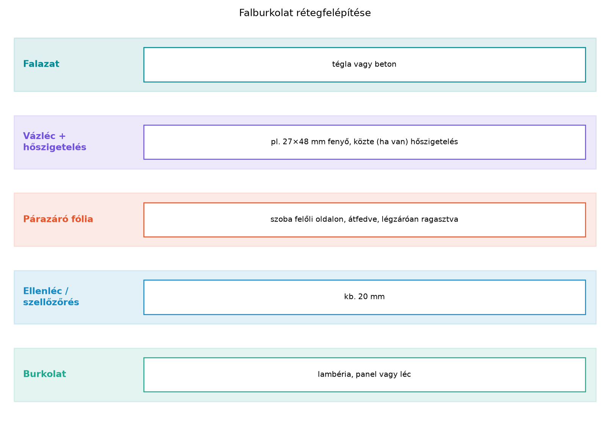

A helyszíni szerelésen gyakran találkozunk egyenetlen, repedezett vagy gépészeti vezetékeket takaró falfelülettel. Ilyenkor a festés vagy tapétázás nem ad szép, tartós felületet. A faburkolat és az álmennyezet egyszerre takar, hőérzetet javít, és lehetőséget ad a vezetékek, szigetelés vagy hangszigetelés elrejtésére. A régi polgári lakásokban a lambéria, a modern irodákban a lécburkolat, a fürdőszobákban a vízálló panel, a nappaliban az álmennyezet mind ugyanazt a célt szolgálja: rendezett, sík felületet hoz létre.
Ha a vázszerkezet nem megfelelően van rögzítve, a burkolat megvetemedik, nyikorog. Ha a páratechnika hiányzik, a burkolat mögött penész jelenhet meg. Ha a tűzvédelmi szabályokat figyelmen kívül hagyjuk, az életveszélyes. Ezért ebben az alfejezetben a falburkolatok és álmennyezetek szerkezetét, méretezését és szerelési sorrendjét tanuljuk meg.
Képzeljünk el egy 3,5 m széles, 2,6 m magas nappali falat. A falra vízszintes fenyő lécvázat szerelünk 60 cm-enként. Ha a váz közé hőszigetelés kerül, a váz szoba felőli oldalára párazáró fóliát feszítünk, erre ellenléc kerül; végül függőlegesen hornyolt lambériát rögzítünk rejtett kapcsokkal. A lambéria mögött 20 mm-es szellőzőrés marad, a lábazatnál szellőzőrács biztosítja a légmozgást. A mennyezeten hasonló elv alapján függesztett váz tartja a faburkolatot.
Az alábbi rétegfelépítés-diagram bemutatja a falburkolat egymásra épülő rétegeit:

A rétegek sorrendje és kivitele határozza meg, hogy a burkolat évtizedekig szép marad-e, vagy felpúposodik, penészedik.
Definíció. A falburkolat olyan belső vagy külső térelem, amelyet válaszfalra, teherhordó falra vagy álmennyezetre rögzítünk, hogy takarja az alapfelületet, hő- vagy hangszigetelést hordozzon, és esztétikai felületet adjon. A faalapú falburkolat lehet lambéria, panel vagy lécburkolat.
Lambéria: hornyolt, általában fenyőből készült, függőleges vagy vízszintes profilozott burkolólap. A csaphornyos (nút-federes) illesztés miatt a lapok egymásba kapcsolódnak, és takarják a rögzítőelemeket. A hasznos szélesség azt a távolságot jelenti, amennyit egy léc takar a falból, miután a horonyba illesztettük a következőt (a teljes szélességből a csap (féder) szélessége vonódik le, jellemzően 4–10 mm).
Panel: keretes szerkezetű, tömör vagy üreges betétes burkolóelem. A keret ad merevséget, a betét lehet furnérozott MDF, rétegelt lemez vagy tömörfa. A paneleket általában rejtett vagy látható csavarral, esetleg kapoccsal rögzítik. A paneles falburkolat klasszikus, elegáns megjelenést ad.
Lécburkolat: keskeny, párhuzamos lécekből álló, modern megjelenésű burkolat. A lécek között lehet kis hézag (pl. 10–20 mm), ami mögé sötét hátfalat lehet szerelni, vagy szorosan egymás mellé helyezve takaró felületet ad. A léc anyaga általában MDF, tömörfa vagy rétegelt furnérlemez.
Álmennyezet: olyan, a födémtől független, függesztett vagy közvetlenül a födémre rögzített szerkezet, amely takarja a gépészeti vezetékeket, javítja a hangszigetelést, és sík felületet biztosít. A faburkolatú álmennyezet lehet folytonos, lamellás vagy kazettás.
Vázszerkezet: az a teherhordó rácsszerkezet, amelyre a burkolatot rögzítjük. Fából készül (pl. 27×48 mm-es fenyő léc), vagy fém profilból (pl. CD profil). A váz biztosítja a síkosságot, a szellőzőrést és a rögzítőelemek befogadását.
Páratechnika: a falburkolat mögötti páravándorlás szabályozása. A belső párás levegő a hidegebb falszakaszon lecsapódhat, ezért párazáró réteget és szellőzőrést kell kialakítani.
Szabály. A falburkolat vázát mindig az alapfelületre, teherbíró rögzítőelemekkel kell felszerelni. A rögzítőelem kiválasztásakor a Rögzítéstechnika: falba, padlóba, mennyezetre alfejezetben tanult alapanyag-azonosítást kell elvégezni. A vázlécek távolsága a burkolat merevségétől függ: 400–600 mm között szokásos (ellenőrizendő: gyártói ajánlás). A váz mögött legalább 20 mm-es szellőzőrést kell hagyni, ha a fal páratechnikai kockázatos (pl. külső fal, nedves helyiség). A faburkolatok esetén a rostra merőleges méretváltozást (zsugorodás-dagadás) mindig figyelembe kell venni, ezért a rögzítésnél dilatációs mozgást kell biztosítani: a kapcsok vagy csavarok ne szorítsák mereven a léc teljes hosszát.
Továbbvitt eredmény. A falburkolatok és álmennyezetek vázszerkezetének, rögzítésének és páratechnikai szabályainak ismeretét a Bútoripari és belsőépítészeti termékek helyszíni szerelése és az Épületasztalos-ipari és kültéri termékek helyszíni beépítése alfejezetben használjuk, ahol a teljes helyszíni folyamatot, a méréstől a takarásig gyakoroljuk. A vázléc-osztás és a burkolat anyagszükséglet-számítás módszere közvetlenül alkalmazható a vizsgaremekben is.
A három fő faburkolat-típus megjelenése és rögzítése eltérő, de a vázszerkezet elve közös.
Lambéria. A klasszikus fenyő lambéria hornyolt profil, nút-feder kapcsolattal. A belső térben általában függőlegesen szerelik, de lehet vízszintesen is. A rögzítés rejtett kapoccsal történik: a kapocs a horony alsó részébe fog, így a következő léc eltakarja. A kapcsot kézi kapocskalapáccsal vagy pneumatikus kapcsozóval lőjük be. A lambéria szélessége gyakran 90–120 mm, vastagsága 12–15 mm, a hasznos szélesség a csap miatt 4–10 mm-rel kisebb. A lécek hossza akár 4–6 m is lehet, de a burkolat közepén toldani is lehet.
Panel. A falpanel keretes szerkezet: a keret 40–70 mm széles, 18–25 mm vastag tömörfa lécekből készül, a betét rétegelt lemez vagy MDF, gyakran furnérozott. A paneleket általában függőlegesen, sorban rögzítik, a kerethez rejtett csavarokkal vagy horonyba illesztett fémfülekkel. A paneles burkolat illik klasszikus enteriőrökhöz, reprezentatív terekhez.
Lécburkolat. A lécburkolat keskeny, 40–100 mm széles, 15–25 mm vastag lécekből áll, amelyeket 10–30 mm hézaggal helyeznek el a vázon. A lécek anyaga tömörfa (pl. tölgy, dió, éger) vagy MDF (festett, furnérozott). A hézagokat sötétre festett MDF hátlap vagy filc mögé szerelik, hogy esztétikus kontrasztot adjon. A rögzítés látható vagy rejtett csavar, esetleg kétoldalas szalag ideiglenes rögzítéssel.
A vázszerkezet a falburkolat alapja. A vázléceket a burkolat irányára merőlegesen kell elhelyezni. Függőleges lambéria esetén tehát a vázlécek vízszintesek. A lécvázat 400–600 mm-enként kell felszerelni, a széleken mindenképpen legyen vázléc. A vázlécek vastagsága legalább 20 mm, hogy a szellőzőrést biztosítsák (pl. 27×48 mm-es léc, a 48 mm-es oldal a faltól távolabbi). A vázléc rögzítése dübelekkel és csavarokkal történik, a dübel és csavar méretét az alapanyag határozza meg (lásd Rögzítéstechnika: falba, padlóba, mennyezetre). A fúrás előtt vezetékkeresővel kell megkeresni a rejtett villanyvezetékeket, víz- és fűtéscsöveket.
A váz szerelésének lépései: 1. Mérjük fel a falat, jelöljük ki a vázlécek helyét vízszintes vonalakkal, 60 cm-enként (tájékoztató osztás). 2. Állítsuk a legalsó vázlécet a padlószinttől 20–40 mm-re, a legfelsőt a mennyezettől 10–20 mm-re. 3. Fúrjuk meg a lyukakat, üssük be a dübeleket, csavarozzuk be a léceket. Ellenőrizzük a függőlegesség/síkosságot lézeres vagy hagyományos vízmértékkel. 4. Ha a fal egyenetlen, használjunk alátétlemezeket (műanyag távtartó gyűrűk vagy faékek). 5. A sarkoknál a vázlécek találkozását erősítsük átlapolással vagy fém sarokelemmel.
Páratechnika. Belső fűtött helyiségben a külső falak belső felületén a pára lecsapódhat, ha a fal hidegebb a harmatpontnál. Ezért, ha a vázlécek közé hőszigetelés kerül, a párazáró fóliát (pl. PE fólia) a hőszigetelés meleg (szoba felőli) oldalán, a vázlécekre rögzítjük, átfedésekkel, légzáróan ragasztva; elé ellenléc kerül, így marad szellőzőrés. Hőszigetelés nélküli, száraz belső falon fólia nem szükséges, a vázlécek közötti, alul-felül nyitott légrés elegendő (ellenőrizendő: épületfizikai terv/páratechnikai számítás). A párazáró réteg tehát a meleg oldalra kerül, a szellőzőrés pedig lehetővé teszi a bejutott nedvesség eltávozását. A szellőzőrés a vázléc vastagságából adódik, de alul és felül nyílásokat kell hagyni, vagy szellőzőrácsot szerelni. A szellőzőrés minimális mérete legalább 20 mm, de nedves környezetben 30–50 mm ajánlott (ellenőrizendő: aktuális építési előírás).
A rajzon a 2,6 m magas falon hat vázlécsor van (): a legalsó 30 mm-re a padlótól, a legfelső 15 mm-re a mennyezettől, a sorok távolsága legfeljebb 60 cm. A vázléc merőleges a burkolatra. A vázléceket szakaszosan, réssel szereljük, hogy a levegő a burkolat mögött alulról felfelé áramolhasson (szemléltető megoldás, ellenőrizendő). Az interaktív változatban a rétegek (falazat, váz, párazáró fólia, burkolat) ki-be kapcsolhatók; a fólia csak hőszigetelt vázban kell, a meleg oldalon (ellenőrizendő: épületfizikai terv).
Az álmennyezet függesztett vagy közvetlenül a födémre szerelt váz, amelyre burkolatot rögzítünk. A leggyakoribb faburkolatú álmennyezet a lamellás (léces) kivitel, de lehet folytonos, hornyolt lambéria is.
Vázszerkezet. A fából készült álmennyezet váza felfüggesztett fenyő lécekből áll. A függesztők lehetnek szabályozható fém akasztók, menetes szárak vagy acélhuzal. A vázlécek osztása 400–600 mm, a burkolat tömegétől függően. A fém CD profilok (pl. 60×27 mm) alkalmazása gyorsabb, de ehhez is kell fa alátét, ha faburkolatot rögzítünk.
Gépészeti kiállások. Az álmennyezet mögött gyakran légcsatorna, villanyvezeték, szellőző, hangszóró vagy tűzérzékelő van. Minden kiállásnál revíziós nyílást kell kialakítani, amelyen keresztül a szerelvény hozzáférhető. A kiállás méretét meg kell mérni, és a vázat úgy kell elhelyezni, hogy a burkolat nyílásai pontosan illeszkedjenek. A nyílás szélét merevíteni kell, hogy a kivágott léc ne hajoljon be.
A burkolat rögzítése az álmennyezetre hasonló, mint a falburkolatnál: rejtett kapocs, csavar vagy fém profilba pattintható elem. A mennyezeti burkolatnál fokozottan kell ellenőrizni a rögzítőelem teherbírását, mert a saját súly és a rezgés is terheli.
Figyelem. A faburkolatok és fa álmennyezetek éghető anyagok, ezért tűzvédelmi besorolásukat és az adott épületben megengedett felhasználásukat a hatályos tűzvédelmi előírások (OTSZ, az épületre vonatkozó tűzvédelmi dokumentáció) szabályozza. Belső terekben a faburkolat anyagát Euroclass szerint osztályozzák (pl. D, C vagy B osztály) attól függően, hogy tömörfa, MDF vagy égéskésleltetővel kezelt anyag. Menekülő útvonalakon, lépcsőházakban szigorúbb követelmények vonatkoznak az éghető anyagokra. A pontos besorolást és a szerelési korlátozásokat a termék teljesítménynyilatkozata és az építési engedély tartalmazza. (ellenőrizendő: aktuális OTSZ és Euroclass besorolás) A burkolat mögötti vezetékeket, csöveket is tűzvédelmi tömszelencével vagy tűzgátló habbal kell ellátni, ha átvezetnek tűzszakasz-határon. Ezt a lépést tűzvédelmi szakember tervezi.
Az alábbi számozott eljárás egy függőleges lambéria falburkolat elkészítését írja le belső térben. A művelet során kézi fúrógépet, szúrófűrészt vagy kézi körfűrészt, kapcsozót és vízmértéket használunk.
Gépbiztonság. A fúrógépet és szúrófűrészt csak betanított, felügyelt tanuló használhatja. Viseljünk védőszemüveget és szükség esetén légzésvédőt. Forgó szerszám közelében ne viseljünk kesztyűt. A fúrás előtt mindig vezetékkeresővel ellenőrizzük a falat. A fúrógép kábelei ne lógjanak a munkaterületre. A szúrófűrészt két kézzel vezessük, a munkadarabot rögzítsük. Kézi körfűrész: az alsó védőburkolat szabadon visszarugózzon, ne rögzítsd nyitva; a vágásmélység a lapvastagság + kb. 5 mm (ellenőrizendő: gépkönyv); a munkadarabot két oldalról alátámasztva, szorítva vágd, hogy a fűrészlap ne szoruljon be (visszarúgás); viselj hallásvédőt, és használj porelszívást. Mennyezeti munkához (álmennyezet) stabil állványt vagy munkadobogót használj, létráról ne szerelj.
Eljárás:
A tanulási cél az anyagszükséglet meghatározása. Az alábbi két példa a burkolat és a vázléc számítását mutatja.
Példa 1. Lambéria falburkolat anyagszükséglete
Adott: fal hossza , magassága . Lambéria névleges szélessége , hasznos szélessége (a csap/féder szélessége, 4 mm, vonódik le a névleges szélességből). A lambéria 3,0 m-es szálban kapható (feltételezés; ellenőrizendő: gyártói kínálat), függőlegesen fut, a vázléc vízszintes, osztása .
Keresett: hány darab lambéria szükséges, és mennyi vázléc folyóméterben?
Megoldás.
A szükséges lécek száma: (Ahol a felső kerekítést jelöli.)
A burkolat teljes hossza (folyóméterben):
A lambéria 3,0 m-es szálban kapható, a 2,6 m-es falhoz szálanként 0,4 m marad, tehát rendelni kell: . A vágási veszteség (a bruttó szükséglet elve szerint).
A vázléc sávjainak száma a falmagasság mentén, osztással: (Szabály: a lécsorok száma = a szakaszok száma + 1 = , mert az első és az utolsó léc a szélen van; a +1 mindig jár.)
A vázléc összes hossza:
Ellenőrzés: A burkolat 37 db × 96 mm hasznos szélességgel = 3552 mm, ami kissé több, mint a fal 3500 mm, tehát a felesleges 52 mm-t le kell vágni az utolsó lécből. A vázléc hossza megfelelő, mert a lécek folyóméterben számolhatók.
Anyagszükségleti táblázat (mintaárak):
| Tétel | Megnevezés | Mennyiség | Egység | Egységár (Ft, minta) | Érték (Ft) |
|---|---|---|---|---|---|
| 1 | Fenyő lambéria, hasznos 96 mm (3,0 m-es szálak) | 111 | fm | 850 | 94 350 |
| 2 | Vázléc, 27×48 mm fenyő | 21 | fm | 280 | 5 880 |
| 3 | Dübel-csavar rögzítő készlet | 40 | db (pár) | 35 | 1 400 |
| 4 | Rejtett kapocs (kapcsozóba) | 250 | db | 4 | 1 000 |
| 5 | PE párazáró fólia | 10 | m² | 320 | 3 200 |
| 6 | Szellőzőrács | 2 | db | 950 | 1 900 |
| Összes anyag | 107 730 |
Az árak tájékoztató jellegűek, a tényleges árajánlat mindig a beszerzési áraktól függ.
Példa 2. Álmennyezet CD profil anyagszükséglete
Adott: helyiség mérete . Az álmennyezet CD profilból készül, a profilok hossztengelye párhuzamos a 4 m-es oldallal, osztásuk . A függesztők a profilok mentén -enként vannak.
Keresett: hány folyóméter CD profil szükséges, és hány függesztő?
Megoldás.
A profilsorok száma az 5 m-es oldal mentén ugyanazzal a szabállyal (szakaszok száma + 1; a falhoz a szegélyprofil mellett az első és az utolsó sor is kell; ellenőrizendő: rendszergyártó szerelési útmutatója):
Összes profilhossz (minden sor 4 m hosszú):
A függesztők száma soronként: a 4 m-es hosszon 1 m-enként, a széleket is beleértve:
Összes függesztő:
Ellenőrzés: A CD profil hossza 40 fm, ami egy 4 m-es és egy 5 m-es oldalú helyiségben a gyakorlati tapasztalatnak megfelelő nagyságrend. A függesztők 50 db értéke is reális, mert a sűrű függesztés (1 m) merev vázat ad.
Szabvány. A faburkolatok és álmennyezetek építési termékek, ezért rájuk vonatkoznak az építési termékekre vonatkozó európai és hazai előírások: a faburkolatok anyagai az európai faanyag- és lapanyag-szabványok szerint osztályozottak (pl. MSZ EN 13986 faalapú lemezek, MSZ EN 14915 fa falburkolatok – a pontos szabványszám ellenőrizendő). Az álmennyezetekre vonatkozó követelményeket az MSZ EN 13964 szabványsorozat tartalmazza (ellenőrizendő). A tűzvédelmi osztályozást az Euroclass rendszer adja (MSZ EN 13501-1). A beépítésnél a faanyag nedvességtartalmának a felhasználási hely egyensúlyi fanedvességéhez kell illeszkednie (lásd A faanyag nedvességtartalma: mérés és számítás). A termék teljesítménynyilatkozatában meg kell adni a tűzvédelmi és páratechnikai jellemzőket. A felsorolt szabványszámok ellenőrizendők, mert az aktuális kiadások és harmonizált változatok eltérhetnek.
A falburkolat és álmennyezet készítése során az alábbi ellenőrzéseket kell elvégezni:
| Ellenőrzési pont | Módszer | Tájékoztató tűrés |
|---|---|---|
| Vázléc síkossága | 2 m-es vízmérték vagy lézer | ±2 mm 2 m-en belül (ellenőrizendő) |
| Vázléc távolsága | Mérőszalag | ±10 mm a tervezett osztástól |
| Burkolat függőlegessége | Vízmérték | ±1 mm/m |
| Hézagok | Hézagmérő | ±0,5 mm a szomszédos lécek között |
| Rögzítőelemek | Szemrevételezés, meghúzás | Nincs laza kapocs/csavar |
| Szellőzőrés | Mérőszalag | Legalább 20 mm (ellenőrizendő) |
| Dilatációs hézag | Mérőszalag | 10–15 mm a széleken |
Az eltéréseket azonnal javítani kell: a vázléc alátétével, a burkolat újraállításával vagy a rögzítőelem cseréjével.
Valós eset. Egy lakóház konyhájában tölgy lécburkolatot szereltek fel közvetlenül a vakolt külső falra, vázléc nélkül, ragasztóval. Télen a belső pára a hideg külső fal felületén a burkolat mögött lecsapódott, a lécek megdagadtak, a felület hullámos lett, a hátoldalon penész jelent meg. Az asztalos megvizsgálta, és megállapította, hogy a hibát a szellőzőrés és a párazáró fólia hiánya okozta. A javítás során a burkolatot leszerelték, a falat gombaölő szerrel kezelték, majd 27×48 mm-es vázléceket rögzítettek 600 mm osztással, közéjük hőszigetelést tettek, a váz szoba felőli oldalára párazáró fóliát ragasztottak, és ellenléccel szellőzőrést hagytak (ellenőrizendő: épületfizikai terv). A léceket rejtett kapcsokkal, dilatációs hézaggal szerelték vissza, alul és felül szellőzőrácsot helyeztek el. A tanulság: a faburkolat sikerét a váz és a páratechnika határozza meg, nem a ragasztó.
1. feladat (A). Határozza meg a lambéria, a panel és a lécburkolat közötti különbséget szerkezetileg és megjelenésben.
2. feladat (A). Egy falburkolat vázléc-osztása 50 cm. Mekkora a szükséges vázléc-folyóméter egy 3,0 m magas, 4,0 m széles falra, ha a vázlécek vízszintesek, és az alsó, valamint felső szélen is van vázléc?
3. feladat (B). Egy 4,5 m széles és 2,7 m magas falra 120 mm névleges szélességű, 112 mm hasznos szélességű lambériát szerelünk függőlegesen. A vázléc osztása 600 mm. Készítsen anyagszükségleti táblázatot a burkolatra és a vázlécire, folyóméterben.
4. feladat (B). Tervezzen meg egy 3 m × 3 m-es álmennyezetet CD profilból, 60 cm osztással, ha a CD profilok a 3 m-es oldallal párhuzamosak. Számolja ki a profilhosszt és a függesztők számát, ha a függesztőtávolság 1,2 m.
5. feladat (C). Hogyan oldaná meg, hogy egy faburkolat mögött ne csapódjon le pára egy kültéri fallal határos helyiségben? Ismertesse a rétegfelépítést az építőanyagok felől a belső felületig.
6. feladat (D). Válassza ki a rögzítőelemeket egy pórusbeton falra szerelt faburkolat vázléceihez. Indokolja a választást, és írja le a fúrási és rögzítési folyamatot.
1. feladat megoldása. A lambéria hornyolt, nút-federes profil, keskeny (90–120 mm), rejtett kapcsokkal rögzített, általában fenyő. A panel keretes szerkezetű, betétes, szerelt kivitel, a keret merevít. A lécburkolat keskeny, párhuzamos lécek sora, lehet hézagos vagy zárt, anyaga tömörfa vagy MDF, modern megjelenésű.
2. feladat megoldása. Vázléc osztása , fal magassága . A szakaszok száma , tehát vázléc kell (a két szélen is). Vázléc hossza soronként 4,0 m, így összesen .
3. feladat megoldása. Burkolat léceinek száma: db. Burkolat teljes hossza: . Vázlécsorok: sor (a +1 már tartalmazza az alsó és a felső lécet). Vázléc hossz: . Táblázat a példa szerint kitölthető.
4. feladat megoldása. A CD profilsorok száma: sor. Profilhossz: . Függesztők soronként: db. Összesen: db.
5. feladat megoldása. A rétegfelépítés kívülről befelé: 1. falazat, 2. vázléc a hőszigeteléssel, 3. párazáró fólia (a hőszigetelés meleg, szoba felőli oldalán), 4. ellenléc/szellőzőrés (legalább 20 mm), 5. faburkolat dilatációs hézagokkal. A párazáró fóliát átfedésekkel, ragasztószalaggal légmentesen kell rögzíteni. A szellőzőrés alul és felül nyitott, szellőzőrács védi a rovaroktól (ellenőrizendő: épületfizikai terv).
6. feladat megoldása. Pórusbeton falhoz pórusbeton dübelt és hozzá illő csavart kell választani. A dübel hossza és átmérője a gyártói táblázat szerint, a csavar hossza a dübel hosszának és a vázléc vastagságának megfelelő. Fúrás fúrószárral, ütvefúró nélkül (pórusbetonhoz), a furatmélység a dübel hossza + 10 mm. A furatot ki kell fújni, dübelt beütni, majd a vázlécet csavarral rögzíteni. A fúrás előtt vezetékkeresővel ellenőrizni kell.
A falburkolatok és álmennyezetek faalapú szerkezetek, amelyek takarják az alapfelületet, gépészetet, és esztétikai felületet adnak. A három fő faburkolat-típus a lambéria, a panel és a lécburkolat. A burkolatot mindig vázszerkezetre kell rögzíteni, amely a burkolat irányára merőlegesen, 400–600 mm osztással készül. A váz mögött szellőzőrést (legalább 20 mm) kell hagyni, és páratechnikai követelmény esetén párazáró fóliát kell beépíteni. Az álmennyezetek függesztett vagy közvetlenül rögzített vázból állnak, a gépészeti kiállásoknál revíziós nyílást kell kialakítani. A faburkolatok éghető anyagok, tűzvédelmi besorolásuk Euroclass szerint történik, az adott épületben az OTSZ szabályai érvényesek. Az anyagszükséglet-számítás a burkolat hasznos szélességéből és a vázléc osztásából indul ki: , . A szerelés során mindig vezetékkeresővel ellenőrzünk, a rögzítőelemeket az alapanyaghoz választjuk.
Felhasznált forrástípusok: a faburkolatok és álmennyezetek műszaki leírásai, az építési termékekre vonatkozó harmonizált szabványok (MSZ EN 13986, MSZ EN 13964, MSZ EN 14915 – a pontos számok ellenőrizendők), a tűzvédelmi Euroclass besorolás (MSZ EN 13501-1), a rögzítőelemek gyártói beépítési útmutatói, az OTSZ előírásai, a faanyag nedvességtartalomra vonatkozó szabványok, valamint a faipari szakképzési gyakorlat.
Ellenőrizendő hiányok: a felsorolt szabványok aktuális címe és kiadási éve, az Euroclass osztályok pontos követelményei, a vázléc-osztás és a szellőzőrés minimális méretei, a függesztőtávolságok teherbírási értékei, valamint a mintaárak és a munkavédelmi határértékek.